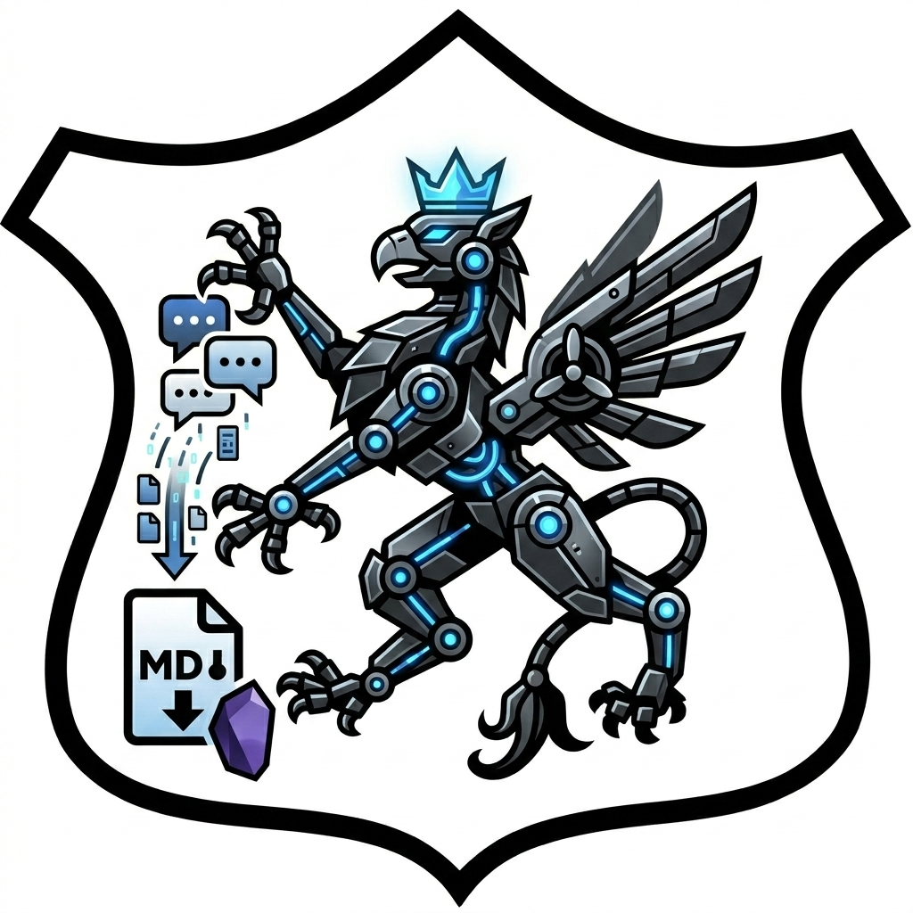

Send your AI conversations into Obsidian, locally.
One-click exporter for the open ChatGPT, Gemini, or Claude chat into a Markdown file with YAML frontmatter, ready to drop into your Obsidian vault. The extension auto-detects the provider from the active tab.
chatgpt.com, gemini.google.com, or claude.ai..md file downloads.The whole extension is a small folder of plain JavaScript in a directory
you control. No third-party servers, no analytics, no auto-updates. After
editing the source, reload via chrome://extensions.